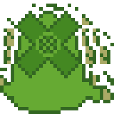
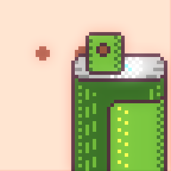
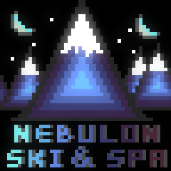
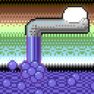
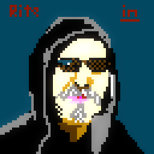

naval windmill by Crustolio in 32x32 #pixels using the Swanky32 palette. Visit http://paint.lo4d.net/ to draw y... 
https://twitter.com/wetgenes/status/519159218495299584 @sgtruck @sixteencolors Since we've been gaining contacts in local art galeries etc we are aiming to be pushing pixels to the art crowd.
https://twitter.com/sgtruck/status/519130037980000256 @sgtruck @sixteencolors We are involved in these two dates 9th http://www.nationalmediamuseum.org.uk/Events/Adults/LatesLetsGetDigital.aspx and again at 20th http://www.wharfchambers.org/events/icalrepeat.detail/2014/10/20/486/-/new-mechanics-institute-show-and-tell.html
@kaneel @sgtruck Yup, I figure ansii art is very related, plan on mentioning teletexts 40th year for instance. http://teletext40.com
https://twitter.com/sgtruck/status/519107574474768385 @sgtruck rightyhoe, BTW I'm doing a pixel art talk at the NMM on Thursday. Any scene pixels you think I must include in it?
https://twitter.com/spadgy_OTA/status/519093842210205697 @spadgy_OTA That looks perfectly fine to me. It's just waiting for the early adopters and trend setters to find it. #newmedia
https://twitter.com/sgtruck/status/518667302599155713 @sgtruck Actually :) You could open the console using ` and type (sorry no paste). main.now.oven.rebake"swpaint.gui".data.winx:value(0)
https://twitter.com/sgtruck/status/518667302599155713 @sgtruck There is, but it is in the options and all the options are disabled for the web version. I'll try and enable that bit next build.
bare spray by ithebatman in 48x48 #pixels using the Swanky16 palette. Visit http://paint.lo4d.net/ to draw your own! 
celestial ski jump by ithebatman in 48x48 #pixels using the Swanky32 palette. Visit http://paint.lo4d.net/ to d...
celestial ski jump by Crustolio in 48x48 #pixels using the Swanky32 palette. Visit http://paint.lo4d.net/ to dr... 
good faucet by ithebatman in 64x64 #pixels using the C64 palette. Visit http://paint.lo4d.net/ to draw your own! 
foreign female by Crustolio in 32x32 #pixels using the Swanky32 palette. Visit http://paint.lo4d.net/ to draw y...
plenty down by Big_Al in 64x64 #pixels using the NES palette. Visit http://paint.lo4d.net/ to draw your own! 
@magic_bane cough working on it. http://paint.lo4d.net/ :)
Damn you Borderlands 2. Linux is what I boot into when I want to do some work... :)
Part one of the video explaining the alpha+7 updates to zee swanky paint. http://paint.lo4d.net/ for more So… https://plus.google.com/109440170884180647149/posts/UPjoXJHP4oa
https://twitter.com/Cmdr_Hadfield/status/516907660718133248 @Cmdr_Hadfield @xranby I read that as "Birds and Bees don't just fap." Which I believe is part of "the talk"
https://twitter.com/johnleach/status/516261790318342144 @johnleach Mulder has to be the figment else the T1000 season breaks it. Which makes him a Durden style character to Scullys mundane life :)